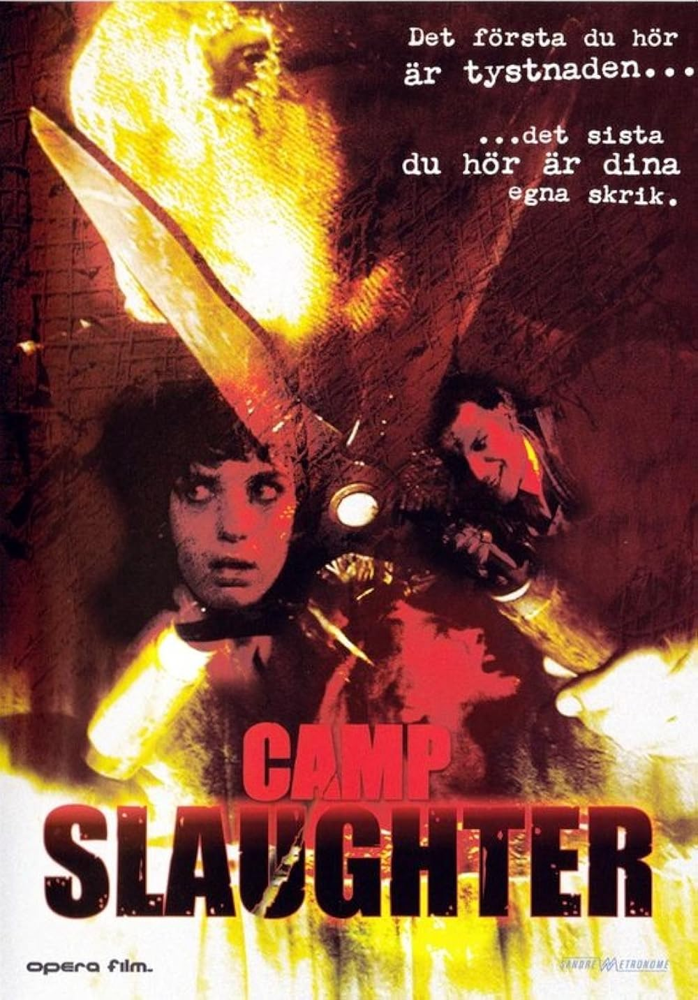
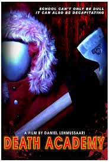
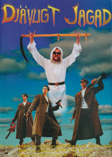
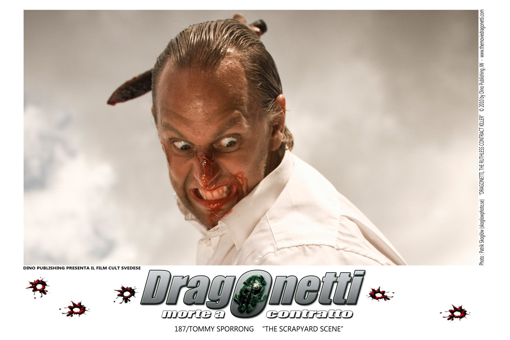
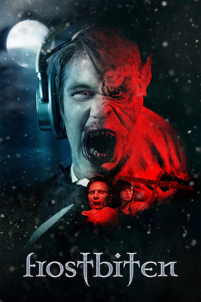
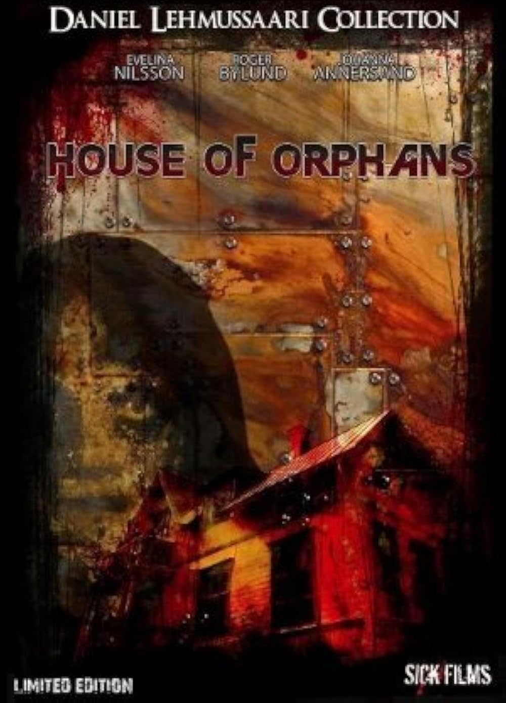
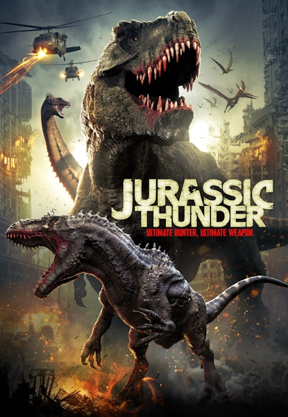
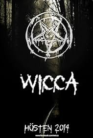
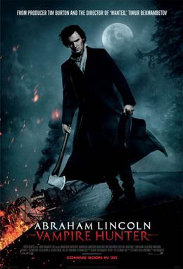

Att titta på dåliga filmer kan verka som ett slöseri med tid, men det finns faktiskt flera oväntade fördelar med att ge dem en chans. För det första kan de vara otroligt underhållande fast på ett annat sätt än bra filmer. När skådespeleriet är överdrivet, dialogen stel eller handlingen helt ologisk uppstår ofta en sorts humor som gör att man skrattar mer än man hade gjort åt en “perfekt” film. Dessutom kan dåliga filmer vara ett socialt fenomen. Att se en riktigt dålig film tillsammans med vänner kan bli en minnesvärd upplevelse där man kommenterar, skämtar och reagerar tillsammans. Det skapar en avslappnad stämning där ingen behöver ta filmen på allvar, vilket ibland är precis det man behöver. En annan fördel är att man utvecklar sin egen smak och sitt kritiska tänkande. Genom att se vad som inte fungerar till exempel svag berättarstruktur, dålig regi eller bristande karaktärsutveckling blir det lättare att uppskatta vad som faktiskt gör en film bra. Det ger en djupare förståelse för film som konstform. Slutligen kan dåliga filmer också vara inspirerande. Många kultklassiker började som filmer som ansågs vara “dåliga”, men som senare fick en trogen publik just för sin charm och egenhet. De visar att det inte alltid handlar om perfektion, utan om att våga vara annorlunda. Så nästa gång du stöter på en film som verkar tveksam ge den en chans. Du kanske inte får en mästerlig filmupplevelse, men du kan få något minst lika värdefullt: skratt, gemenskap och ett nytt perspektiv.